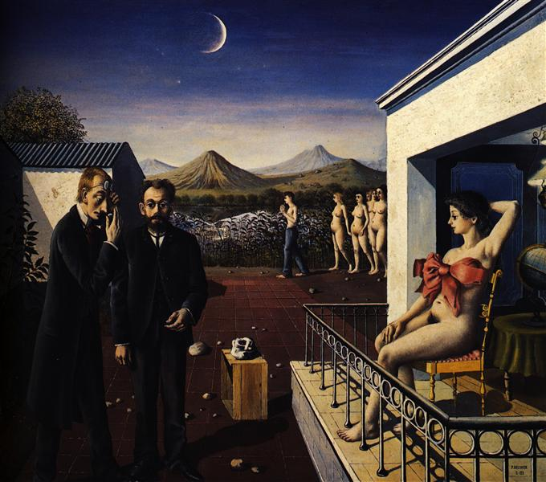
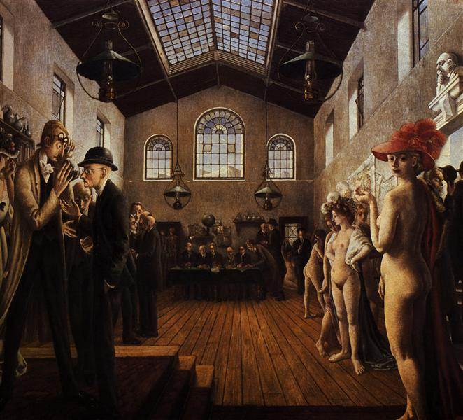
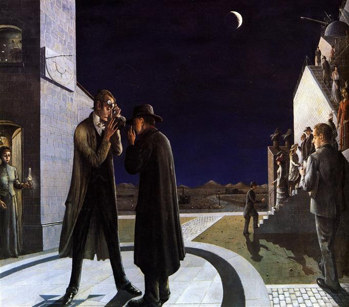
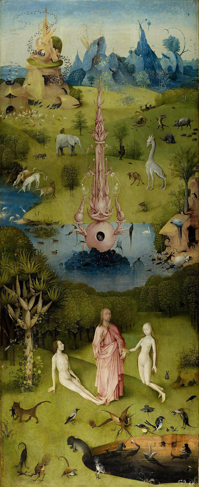
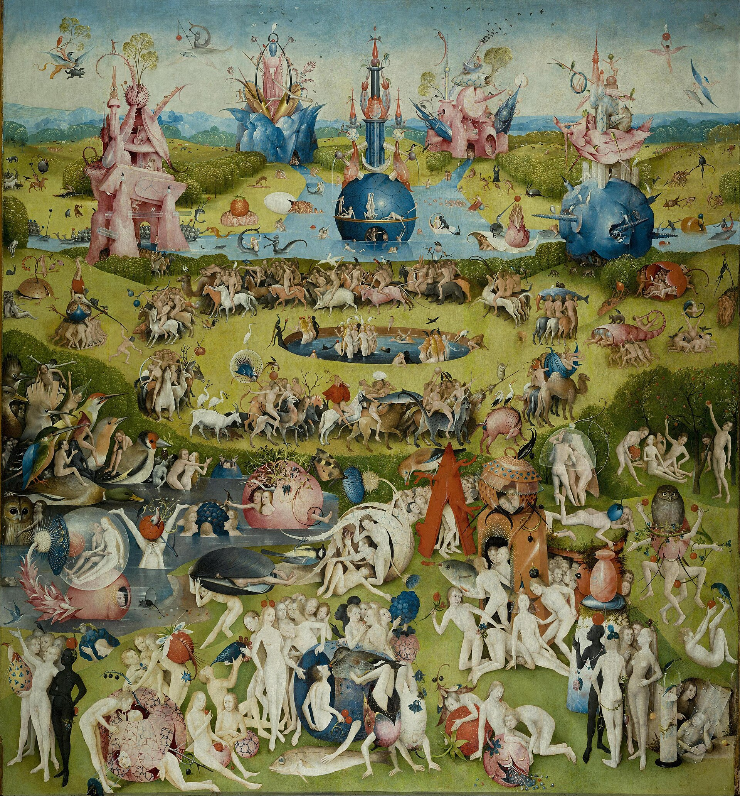
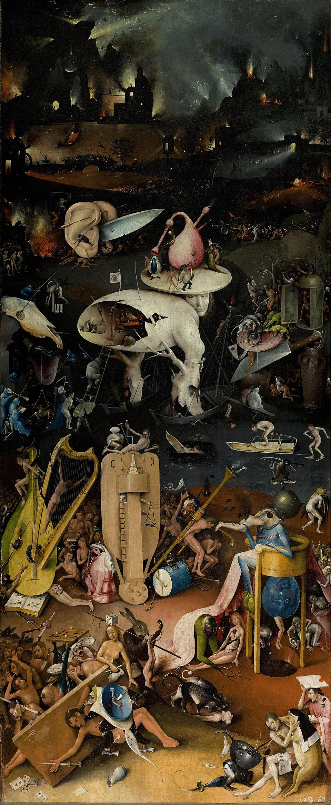

World Construction
MONDAY / ARTIST OF THE DAY
Paul Delvaux
Paul Delvaux (b.1897, d.1994) is a Belgian painter, remembered for his surreal yet hyper-realistic paintings. I was drawn to his frequent depictions of feminine subjects against the backdrop of dream-like, stately architecture. He frequently paints in cool colors, which contribute to the mystique of his compositions.


1939, Oil on Canvas, 139.5 x 160 cm


1941, oil on canvas, 160 x 180 cm


1942, oil on canvas, 155 x 175 cm
WEDNESDAY / ARTIST OF THE DAY
Hieronymus Bosch
Hieronymus Bosch (d.1516) was a Dutch painter of the Early Netherlandish painting school. I chose this artist because of his intricate, surreal, often grotesque compositions that posess religious imagery and narratives. His meticulous world construction is apparent within much of his work, depicting scences such as heaven, hell, and sin.


[ca. 1490–1500, Oil on Wood]


[ca. 1490-1500, Oil on Wood]


[ca. 1490-1500, Oil on Wood]